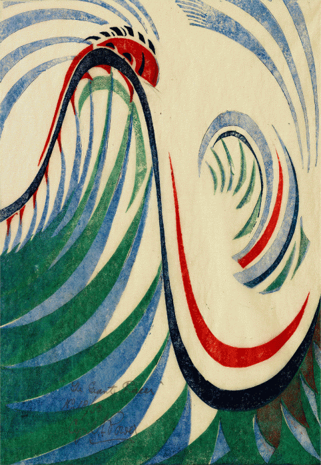
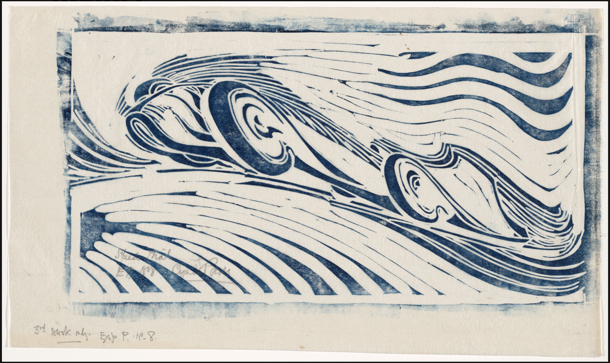
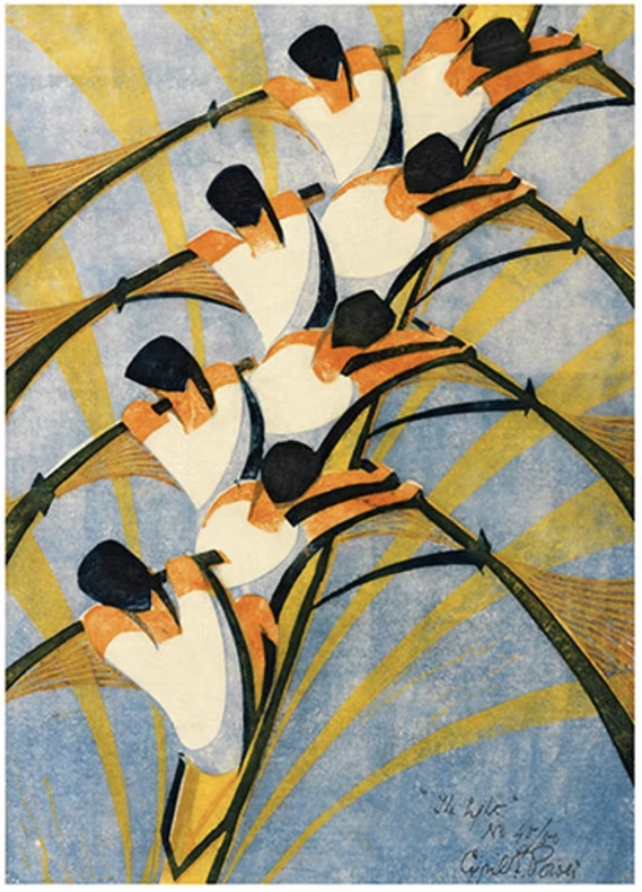
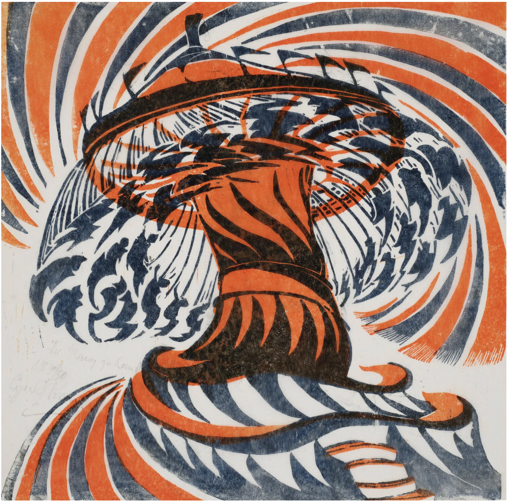
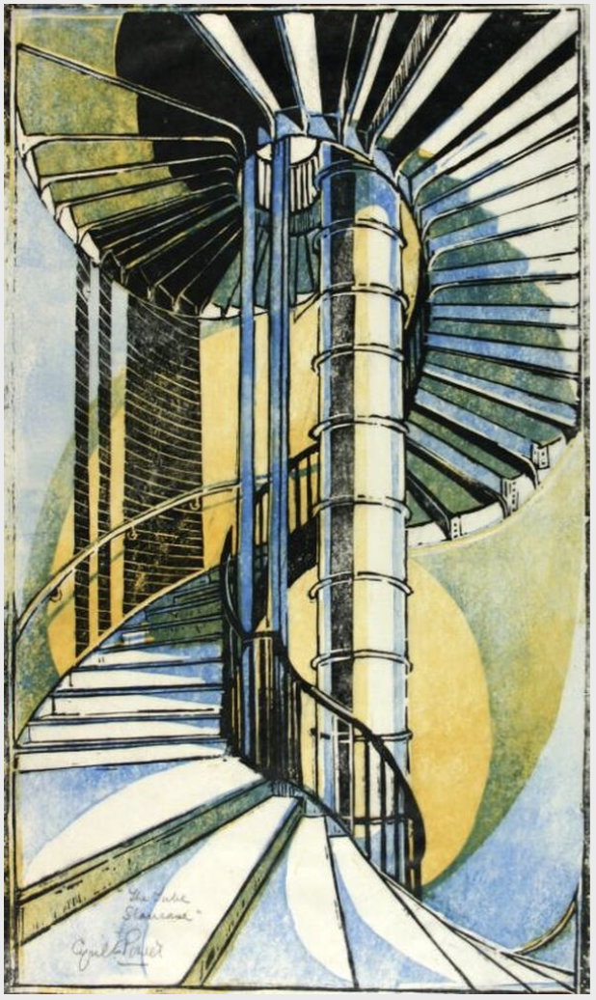
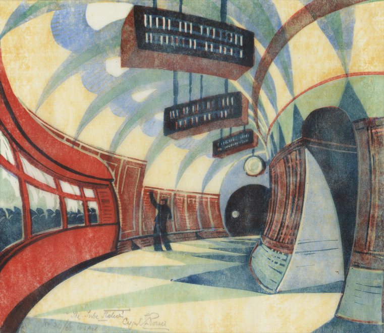
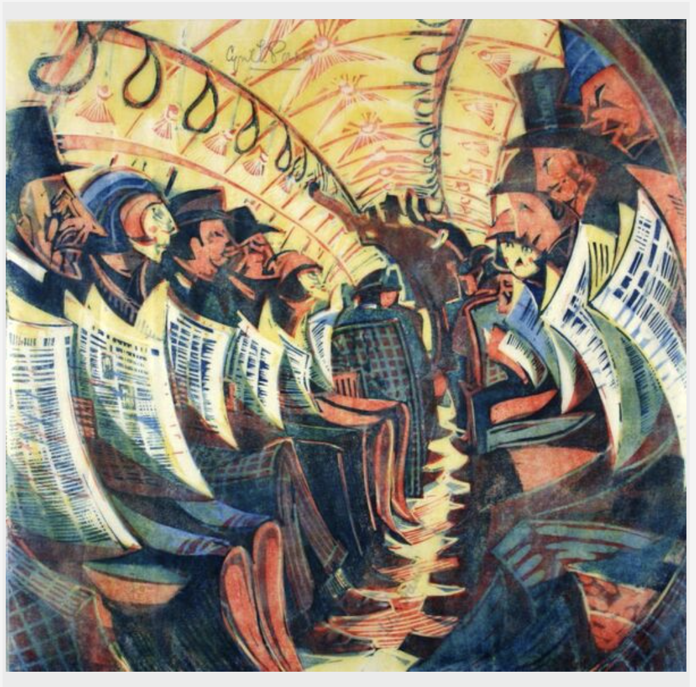
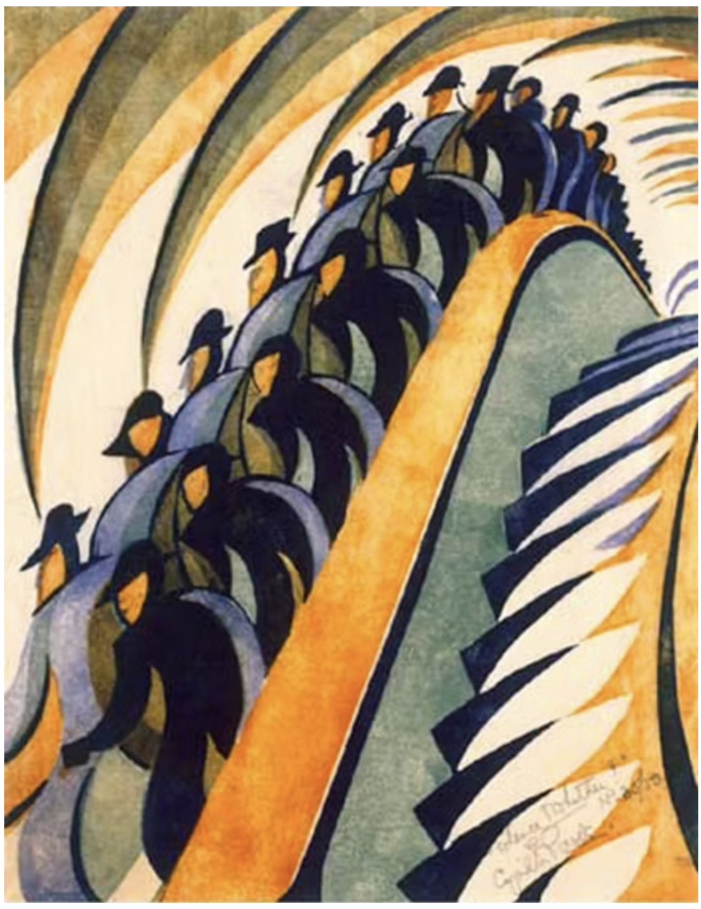

Artworks

'The Giant Racer' Linocut on paper, circa.1930

'Speed Trial' Linocut, circa.1932

'The Eight' Linocut on paper, 1930

'The Merry-Go-Round' Linocut on paper, circa 1930

'The Tube Stiarcase' Linocut on paper, 1929

'The Tube Station' Linocut on paper, 1932

'The Tube Train' Linocut on paper, 1934

'Whence & Whither?' Linocut on paper, circa.1930